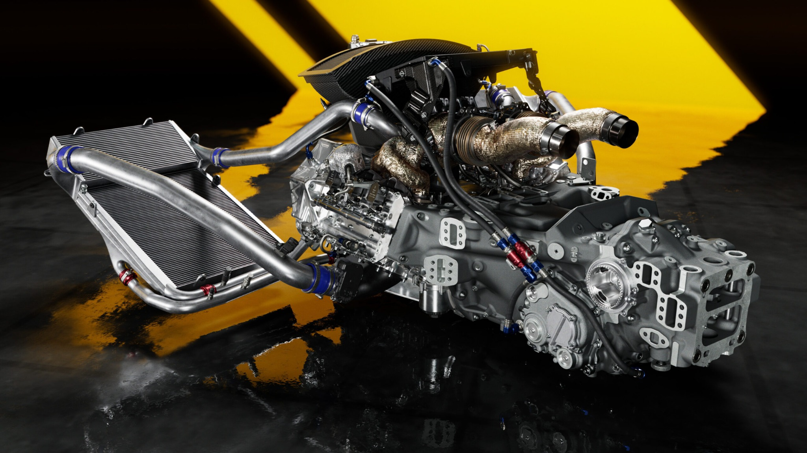

Motor y sistema híbrido

El Ferrari 499P utiliza un motor V6 biturbo de 3.0 litros basado en la familia de motores desarrollada por Ferrari. El prototipo incorpora además un sistema de propulsión híbrido en el eje delantero.
La combinación entre el motor de combustión y el sistema eléctrico permite entregar un elevado rendimiento y mejorar la eficiencia durante las carreras de resistencia.
Características técnicas
| Motor | V6 biturbo |
|---|---|
| Cilindrada | 3.0 litros |
| Sistema | Híbrido |
| Transmisión | Secuencial de 7 velocidades |
| Chasis | Monocasco de fibra de carbono |
| Categoría | Le Mans Hypercar |